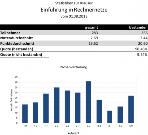

Dieser Artikel beschäftigt sich mit der Vorlesung „Einführung in Rechnernetze“ des Moduls „Kommunikation und Datenhaltung“ am KIT. Er dient als Prüfungsvorbereitung. Ich habe die Vorlesungen bei Herrn Prof. Dr. Beigl im Sommersemester 2013 gehört.
Contents
Behandelter Stoff
| 16.04.2013 | Einleitung |
| Kapitel 1 | |
| 24.04.2013 | Email, DNS, dig, nslookup, Peer-to-Peer-Netzwerke, Bootstrapping-Problem, ISO-/OSI-Schichtenmodell, SAPs; Dienstgeber/-bringer, -funktionalität, -nehmer, -primitiv, -leistung; Request, Indication, Response, Confirm; QoS |
| Kapitel 2, Folie 18 | |
| 30.04.2013 | SDU, PDU, ISO / OSI-Architektur |
| Kapitel 2 bis wohin? | |
| 21.05.2013 | CRC, Generatorpolynome, Vorwärtsfehlerkorrektur, Sequenznummern, Quittung, Stop-and-wait |
| ? | |
| 28.05.2013 | Protokollmechanismen und Verbindungen: Stop-and-wait; Go-Back-N ARQ, Flusskontrolle (Open Loop, Closed Loop); Kreditbasierte Flusskontrolle |
| Kapitel 4.5 - 4.8 | |
| 04.06.2013 | ? |
| Kapitel 5 | |
| 12.06.2013 | Übungsblatt 2: ARQ: Bestätigter Dienst (JA), Zuverlässiger Dienst (JA, wenn...); Stop-and-Wait; |
| ? | |
| 18.06.2013 | Paketvermittlung |
| 7.2.2 | |
| 25.06.2013 | Broadcast-Routing: Dateneinheit wird für jedes System erstellt; Hot-Potato; Potential des Missbrauchs (→ The Internet could crash. We need a Plan B.); Outlaw-detection; Distanz-Vector-Routing; Link-State-Routing |
| 7-44 | |
| 02.07.2013 | IPv4 (Class A/B/C/D/E-Netze); CIDR; Zuteilung von Adressen (DHCP); Subnetze und Subnetz-Maskierung |
| 7-44 |
Falls hier was fehlt, könnt ihr mich gerne in den Kommentaren oder per Mail (info@martin-thoma.de) darauf aufmerksam machen. Ich bin ja mal gespannt, ob ich das bis zum Ende aktuell halte.
Übersicht über Dienstprimitive
| Name | Dienstleistung | Grundtypen | Parameter | ||||||
|---|---|---|---|---|---|---|---|---|---|
| Physical (Ph) | Connect (Con) | Request (Req) | Abhängig vom Dienst | ||||||
| Data Link (DL) | Data (Dat) | Indication (Ind) | |||||||
| Network (N) | Release (Rel) | Response (Rsp) | |||||||
| Transport (T) | Abort (Abo) | Confirmation (Cnf) | |||||||
| HTTP | Provider Abort (PAbo) | ||||||||
| FTP | Disconnect (Dis) | ||||||||
| ... | ... | ||||||||
Fragen
Welche Qualitätsparameter sind für Rechnernetze denkbar?
- Angemessenheit
- Technische Leistung (Antwortzeit, Datenrate)
- Zuverlässigkeit
- Sicherheit
- Kosten
Material
- Vorlesungswebsite
- Forum
- Mein Anki-Deck
- Ein Video über CRC
- Der Wikipedia-Artikel Routing beinhaltet viele wichtige Informationen.
- TCP flags: Hackers Playground
Aufbau der Klausur
Häufige Aufgabenstellungen sind:
- Berechnen einer Subnetzmaske bzw. ob eine IP-Adresse in einem gegebenem Subnetz enthalten ist
- CRC berechnen / überprüfen ob CRC korrekt ist
- Distanz-Vektor Algorithmus (Bellman-Ford) durchgehen
- Protokollablauf durchspielen
Übungsbetrieb
Übungsblätter sind hier.
Termine und Klausurablauf
Datum: Donnerstag, den 1. August 2013 von 14:00 bis 15:00 Uhr
Ort: Seit 28.07.2013 online:
| Ort | von | bis |
|---|---|---|
| Audimax A (30.95, EG) | Abdullah | Galler |
| Audimax B (30.95, EG) | Gassenschmidt | Löffler |
| HSaF (50.35, EG) | Loose | Tobias |
| Neue Chemie (30.46, EG) | Traub | Zumkeller |
Einsicht: 17.09.2013
Punkte: 30
Bestehensgrenze: 13 Punkte
Notenskala:
| Note | von | bis | Bereichsgröße |
|---|---|---|---|
| 1,0 | 30,00 | 26,50 | 3,5 |
| 1,3 | 26,25 | 25,00 | 1,25 |
| 1,7 | 24,75 | 23,50 | 1,25 |
| 2,0 | 23,25 | 22,00 | 1,25 |
| 2,3 | 21,75 | 20,50 | 1,25 |
| 2,7 | 20,25 | 19,00 | 1,25 |
| 3,0 | 18,75 | 17,50 | 1,25 |
| 3,3 | 17,25 | 16,00 | 1,25 |
| 3,7 | 15,75 | 14,50 | 1,25 |
| 4,0 | 14,25 | 13,00 | 1,25 |
| 5,0 | 12,75 | 00,00 | 12,75 |
Bonuspunkte: Nein
Nicht vergessen
- Studentenausweis
- Kugelschreiber
Ergebnisse
Sind nun online. Hier ist die Statistik:

{kind=link}
Klausurergebnisse Rechnernetze 2013